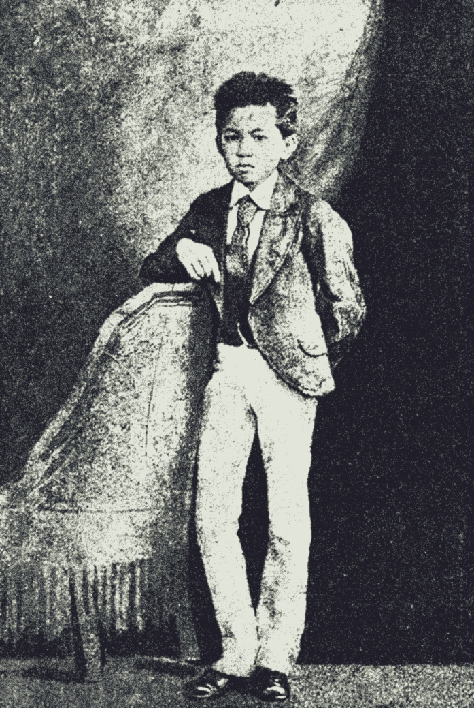

Regardless of the questionable authorship, Rizal's early poetic experiences clearly demonstrate his interest in the development of Filipino culture, as well as the desire to promote Filipino literature.
